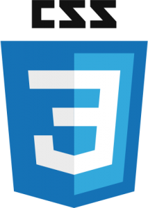

Grant, Richard, and Seth's Journal
Frontend Freelancers class meets, then gets nitty "GIT"ty in the Lightning Kitchen.
Week 1: 02/24/2014 - 03/02/2014The class started with the introduction and background of all the students and what we hoped to master from participating at PCS. Each of us has varied history, be it in design, teaching, art, swimming, construction or coding, yet we all want freelancing to free us up temporally and/or finacially. The class is geared toward this goal by focusing on the "meta" picture of what it is needed to function in the web environment while not bogging down on individual programs or coding languages. The speed is fast and intimidating, yet hardwork and trust in the system should prevail.
The "outside of class" learning curve is high and sometimes feels a little overwhelming, but we trust there is a reason for all of it (read: GIT) that will make more sense later.
Topics covered in the first week are itemized below with a brief description of each:
- Developent Resources: Programs needed on the machine and how to set them up
- Kitchen Metaphor: An intuitive way to look at the web server and client browser relationship
- Island Metaphor: Understading the way that the syntax/purpose of a programming language is absorbed.(read: GIT/Console/Bash)
- Lightning Talks: Each student offered a brief (up to 5 minutes) talk about a topic that interested them with a critique by Al and Nim afterwards.
- Communication methods: Different methods to reach people for questions or meeting.
Scrape and Break: Looking at the innards and outtards of an web page.
Week 2: 03/03/2014 - 03/10/2014The class covered how to construct a web page by deconstructing sample pages.
Text is the medium in which everything from HTML to CSS to Javascript is created. Basic Text (non-code words or syntax) forms the content of a site. HTML describes and contains that content in a "Meta" way, while CSS tells that content and HTML how to look. Javascript directs HTML and CSS how to act/react. We also looked at Chrome Developer tools that diagnosed each of these components of a web page.
The hierarchy of CSS is very important and should be mastered.
Listed are CSS importances from highest(specific) to lowest(general):
- Element Style
- Id
- Class
- Tag
- Document Inheritance
The real life examples by Nim were much easier to follow after completing the readings and gave insight into the lifecycle of a project